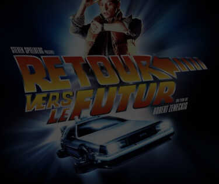

RETOUR VERS LE FUTUR
Une saga culte
Une saga culte
Les années 80 est 90 sont marquées par la montée du genre « geek » et de la science-fiction. Ce changement se ressent à la télévision, dans la littérature et au cinéma. Retour vers le futur est un bon exemple typique cette période.
Retour vers le futur est une trilogie de films réalisés par Robert Zemeckis entre 1985 et 1990.
La saga, en version originale, se nomme Back to the futur. Ces films sont sortis respectivement le 30 octobre 1985, 20 décembre 1989 et 18 juillet 1990. Les deux acteurs principaux sont Micheal J.Fox et Christopher Loyd. Dans les rôles iconiques de Marty Mc Fly et du Docteur Emett Brown. La bande originale a été produite par Alan
Marty Junior McFly est un jeune lycéen de Hill Valley en Amérique. Un soir, son ami le Docteur Emmett Brown lui donne rendez vous à 2 heure du matin sur la Promenade des Deux Pins. À cet endroit, Marty va assister au test du travail de toute une vie. L’essai d’une machine à voyager dans le temps fabriquée à partir d’une Dolorean.
« Quitte à voyager dans le temps a bord d’une voiture autant en chosisir une qui ai de la gueule !»
Docteur Emmet Brown
Toute la saga nous conte l’histoire de ces deux personnages bien spéciaux. Pleine de rebondissements et paradoxes temporels, cette trilogie saura vous questionner sur le fonctionnement même du temps et de l’univers. Cette trilogie restera à jamais l’une des sagas phare de la science-fiction. Nous avons d’ailleurs fêté, le mercredi 20 octobre de l’an 2015, l’arrivée de la Dolorean. Dans le deuxième film, nos deux héros voyagent en 2015. Soit, pour les personnes de 1989, un lointain futur. Accompagné d’un humour simple mais efficace, chacun de ces trois films saura vous faire rire peut importe votre âge.